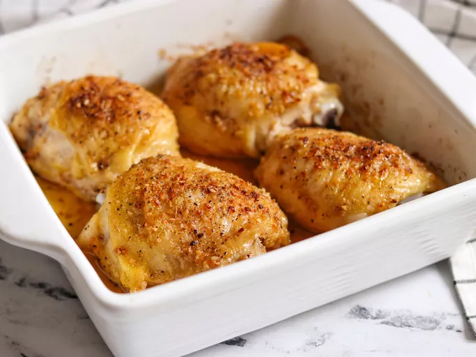

Home
Baked Chicken

Description
These seasoned baked chicken breasts always turn out tender, juicy, and perfect every time with this easy 5-ingredient recipe. Adding some chicken broth to the delicious pan drippings creates a flavorful sauce to serve with the chicken.
Ingredients
- 4 (5 ounce) skinless, boneless chicken breast halves
- 2 tablespoons olive oil
- 1/2 teaspoon salt
- 1 pinch creole seasoning
<1i>1 tablespoons chicken broth or water
Steps
- Preheat the oven to 400deg F.
- Rub chicken breasts with olive oil, salt and the creole seasoning.
- Bake in the preheated oven for 10 min.
- Remove chicken to a plate. Pour chicken broth or water to the baking dish. Scrape the browned bits off the bottom.
- To serve, drizzle the pan sauce over the chicken.